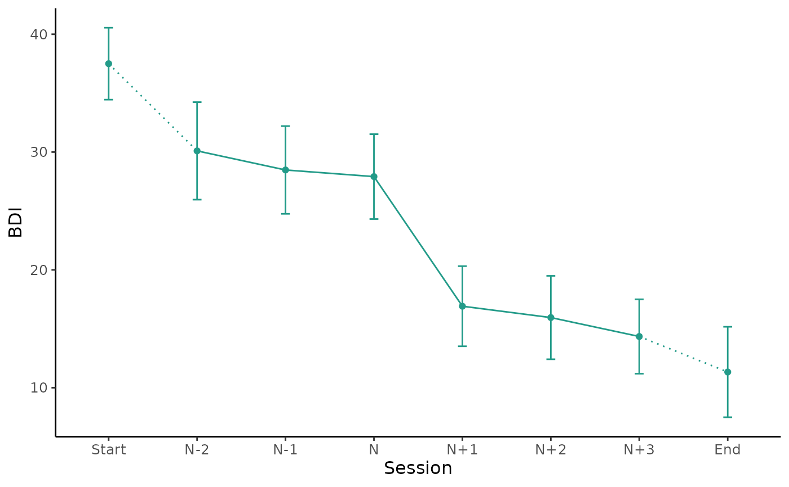

Generates a plot of the mean values around the sudden gain using ggplot.
This can be used to plot the primary outcome or secondary measures.
The parameters starting with "group" allow to plot the average gain magnitude by group.
Further ggplot2 components can be added using + following this function.
Usage
plot_sg(
data,
id_var_name,
tx_start_var_name,
tx_end_var_name,
sg_pre_post_var_list,
ylab,
xlab = "Session",
colour_single = "#239b89ff",
colour_group = c("viridis", "ggplot", "grey"),
viridis_option = c("D", "A", "B", "C"),
viridis_begin = 0,
viridis_end = 1,
group_var_name = NULL,
group_levels = NULL,
group_labels = NULL,
group_title = NULL,
apaish = TRUE
)Arguments
- data
A
bysgorbypersondataset created using the functioncreate_bysgorcreate_byperson.- id_var_name
String, specifying the name of the ID variable.
- tx_start_var_name
String, specifying the variable name of the first measurement point of the intervention.
- tx_end_var_name
String, specifying the variable name of the last measurement point of the intervention.
- sg_pre_post_var_list
Vector, specifying the variable names of the 3 measurement points before, and the 3 after the sudden gain, for the measure being plotted.
- ylab
String, specifying the label for the y axis i.e. the name of the measure being plotted.
- xlab
String, specifying the label for the x axis, e.g.
"Session".- colour_single
String, specifying the colour of the plot for one group.
- colour_group
String, specifying the discrete colour palette to be used for the groups.
- viridis_option
String specifying the colour option for discrete viridis palette, see
scale_fill_viridis_d.- viridis_begin
Numeric, specifying hue between 0 and 1 at which the viridis colormap begins, see
scale_fill_viridis_d.- viridis_end
Numeric, specifying hue between 0 and 1 at which the viridis colormap ends, see
scale_fill_viridis_d.- group_var_name
String, specifying the variable name of the group variable.
- group_levels
Vector, specifying the levels as numeric for the groups in
group_var_name.- group_labels
Vector, specifying the label names as strings for the groups in
group_var_name.- group_title
String, specifying the title that will be used for the groups specified in
group_labels.- apaish
Logical, make plot APA publishable.
Examples
# First create a bysg (or byperson) dataset
bysg <- create_bysg(data = sgdata,
sg_crit1_cutoff = 7,
id_var_name = "id",
tx_start_var_name = "bdi_s1",
tx_end_var_name = "bdi_s12",
sg_var_list = c("bdi_s1", "bdi_s2", "bdi_s3",
"bdi_s4", "bdi_s5", "bdi_s6",
"bdi_s7", "bdi_s8", "bdi_s9",
"bdi_s10", "bdi_s11", "bdi_s12"),
sg_measure_name = "bdi")
#> First, second, and third sudden gains criteria were applied.
#> The critical value for the third criterion was adjusted for missingness.
# Plot average change of BDI values around the period of the sudden gain
plot_sg(data = bysg,
id_var_name = "id",
tx_start_var_name = "bdi_s1",
tx_end_var_name = "bdi_s12",
sg_pre_post_var_list = c("sg_bdi_2n", "sg_bdi_1n", "sg_bdi_n",
"sg_bdi_n1", "sg_bdi_n2", "sg_bdi_n3"),
ylab = "BDI", xlab = "Session")
#> Warning: Removed 27 rows containing non-finite values (`stat_summary()`).
#> Warning: Removed 27 rows containing non-finite values (`stat_summary()`).
#> Warning: Removed 14 rows containing non-finite values (`stat_summary()`).
#> Warning: Removed 8 rows containing non-finite values (`stat_summary()`).
#> Warning: Removed 10 rows containing non-finite values (`stat_summary()`).
